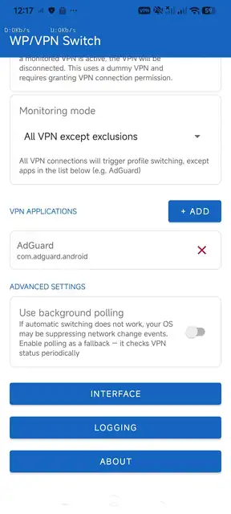

Work Profile VPN Switcher
أدوات النظام
App for automatically managing an Android work profile when a VPN connects. Monitors VPN connections and automatically disables the work profile while a VPN is active, then restores its state after the VPN disconnects. Useful when the work profile contains apps that should not run through the VPN tu
✓ ترخيص مفتوح (Apache-2.0) · آخر تحديث: 2026-10-15
1.2.1الإصدار
12.2 MBالحجم
Apache-2.0الرخصة
Open in Kanzتحميل APK (12.2 MB)
Download APK
SHA-256: 32b9949c5e2d305c7cad58e7d10fa915087c47a72976c423152f8690c37b58f5


امسح الكود لفتح صفحة التطبيق
Scan to open this app page
لو كنز مش متثبت عندك: نزّل متجر كنز.
Not installed? Get the Kanz store.